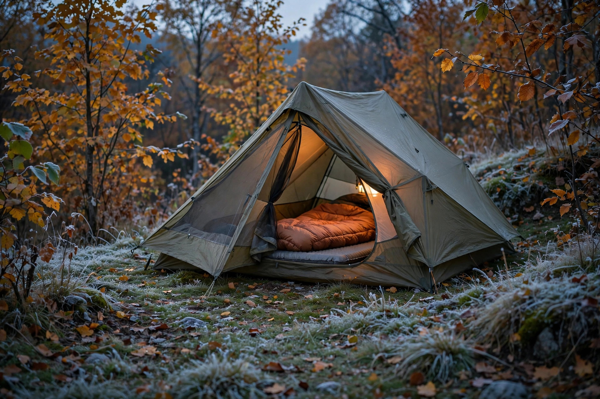

Cold-weather camping in fall: staying warm when the nights drop

Fall camping fails at about three in the morning. The afternoon was mild, the evening pleasant, and then the temperature kept falling past the point the gear was chosen for, and somebody spent the dark hours cold, awake, and counting the cost of a sleeping bag bought for summer. The fix is not a single warmer product. Warmth at night is a system with four parts — the forecast low, the bag’s comfort margin, the insulation between body and ground, and a bedtime routine run in the right order — and the system fails at whichever part was guessed. This guide turns each part into a decision that can be made at home, with numbers, before the trip is packed.
Start with the overnight low, not the afternoon high
The first decision is which temperature to plan against, and the common mistake is planning against the day. Fall afternoons can feel mild while the overnight low drops close to freezing, so the only number that matters for sleep gear is the forecast low at the campground’s elevation, checked close to departure. Then apply a margin. Ratings and forecasts are both estimates, campsites in low ground run colder than the nearest town, and a sleeper who runs cold needs more margin than one who runs warm. The decision framework below converts a forecast low into a gear target in one pass, using margins drawn from published retailer and campground guidance.
| Step | Question | Rule used |
|---|---|---|
| 1. Forecast | What is the overnight low at the site? | Use the low, never the daytime high, and re-check the day before departure |
| 2. Bag margin | How far below that low is the bag’s rating? | Published rules of thumb range from about 10–15 degrees F below the low to about 20 degrees F below the expected temperature for colder sleepers |
| 3. Ground insulation | What is the pad’s R-value? | Around 3.5–4.0 or higher for fall; stack a foam pad under an inflatable if the main pad falls short |
| 4. Site check | Is the campground still open, and where exactly is the pitch? | Many campgrounds close in late September or early October; choose slightly elevated, sheltered ground over a cold-pooling low spot |
Worked example: the forecast low is minus 2 degrees Celsius, about 28 degrees Fahrenheit. A bag rated to 35 degrees Fahrenheit is not a close call; it is the wrong bag by a wide margin. Applying the framework, the target is a bag rated somewhere around 10 to 20 degrees Fahrenheit, a pad at roughly R-value 4 or a stacked pair that adds up to it, and dry sleep layers set aside. That is a colder kit than the afternoon suggested, and it is the kit that produces sleep.
Read a temperature rating the way it was tested
A sleeping bag rating is a laboratory number with conditions attached, and the conditions explain most cold surprises. KOA’s cold-weather bag guidance states the assumption directly: temperature ratings presume the sleeper is wearing warm clothes and using a sleeping pad to stay off the cold ground. Strip away either condition — sleep in a thin shirt, or on a thin summer pad — and the same bag performs noticeably worse than its label. Ratings also describe a standard sleeper, not a specific person. A rating is not a comfort guarantee at that exact temperature; cold sleepers should choose a warmer rating than the forecast seems to demand, which is precisely what the margin in the framework is for. Seasonal bands help as a sanity check: spring and fall bags commonly carry ratings from about 10 to 35 degrees Fahrenheit, while summer bags sit at 35 degrees and up. A summer bag on a fall night near freezing is outside its band by design, not by bad luck.
Insulation: down, synthetic, and the wet question
The fill choice is a trade between packed size and wet performance. Down compresses smaller and is durable, which is why backpackers favour it, but it insulates poorly when wet. Synthetic insulation, typically polyester, costs less, is bulkier and harder to pack small, and keeps insulating when damp. Water-resistant down treatments sit between the two at a higher price. For fall car camping, where space is rarely the binding constraint and shoulder-season weather is famously damp, the synthetic disadvantage shrinks and its wet-weather forgiveness matters. For backpacking in a reliably dry forecast, down’s packed size earns its premium. Either way, the fill only works when it can loft: a bag stored compressed, or climbed into still flattened from its stuff sack, traps less air and insulates less, which is why the bedtime routine below includes shaking the bag out well before bed.
The ground steals more heat than the air
Ask experienced cold campers which matters more, bag or pad, and the pad wins surprisingly often. The reasoning is physical: body weight compresses the bag’s insulation underneath to near nothing, so the pad is the only insulation between the sleeper and cold ground for the whole night. R-value measures that insulation, and higher is warmer. Published fall guidance converges on a similar floor: around R-value 3.5 or higher in one preparation guide, R-value 4 or higher in another, with both treating a summer pad as insufficient for cold ground. The budget-friendly correction is stacking. R-values add, so a modest inflatable pad placed over an inexpensive closed-cell foam pad gains real insulation without replacing the main pad — a trick fall guides recommend repeatedly because it works with gear many campers already own. Site choice adds a final layer: cold air is heavy and pools in valley bottoms, meadows, and dry creek beds, so a slightly elevated, sheltered pitch can be measurably warmer than a scenic low spot a few metres away.
The bedtime routine, in order
Tips lists scatter these steps across a page. Run as a sequence, in this order, they compound — that sequence is the tested procedure.
- Eat before bed, roughly thirty to sixty minutes ahead, favouring substantial food. Digestion is heat production, and going to bed hungry is going to bed with the furnace unfuelled.
- Shake out the sleeping bag early in the evening so the insulation regains full loft before it is needed, and lay the pad system out at the same time.
- Change into the dry sleep kit — base layers, socks, and underwear worn only for sleeping and kept in their own dry bag. Daytime clothes carry absorbed moisture even when they feel dry, and damp fabric against skin chills steadily all night.
- Add the head and feet details: a beanie or the bag’s hood, loose warm socks that do not restrict circulation, and gloves or a neck gaiter for cold sleepers.
- Use a hot water bottle if the night is genuinely cold: a well-sealed bottle of hot water placed in the bag before bed pre-warms it and stays useful for hours. Confirm the lid is tight; a leak defeats the entire dry system.
- Ventilate a little, even so. Breath moisture trapped in a sealed tent condenses and dampens insulation overnight. A small vent opening trades a negligible amount of warmth for drier gear by morning.
What success looks like: waking once, briefly, to a cool face — and a warm core, warm feet, and dry layers — rather than the slow full-body chill that starts at the ground and never reverses. If the cold arrives through the back first, the pad system is the failed layer, whatever the bag’s label says.
Shoulder-season logistics nobody mentions
Fall trips fail on logistics as often as on gear. Many campgrounds close for winter in late September or early October, so an open confirmation — not an assumption from a summer visit — belongs on every fall checklist, along with a backup option if the first choice is shuttered. Daylight shrinks at the same time, which moves every camp task earlier: a pitch that was trivial at eight in July happens in the dark in October unless arrival is planned around sunset. Fire rules also change with dry fall conditions, so check current campground fire rules before counting on a campfire for evening warmth; the fire is a social centre and a hand-warmer, never a substitute for a sleep system rated for the night. Finally, tell someone the plan and the return time. Cold magnifies every small problem, and shoulder season is when small problems deserve respect.
FAQ
Is a liner a substitute for a warmer bag? No. A liner adds a modest boost and keeps the bag cleaner, which helps a marginal setup on a mild night. It does not convert a summer bag into a fall bag across a twenty-degree gap; the margin decision comes first.
More clothes inside the bag: better? Only up to a point. Dry, breathable layers help; piling on so much that the bag’s loft is compressed, or sweating inside the layers, makes things worse. One dry base-layer set plus hat and socks is the usual sweet spot.
Why were the tent walls wet in the morning? Most often condensation from breath in still air, not a leak. Venting a little and keeping wet gear out of the inner tent reduces it sharply.
Safety note: this guide is general information. Cold exposure is a genuine risk, especially combined with wet clothing or wind. Check the forecast for the exact site, carry a margin beyond it, and treat persistent shivering, confusion, or clumsiness in any camper as a medical warning sign that ends the trip, not a comfort problem.